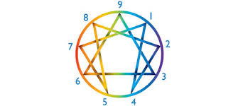
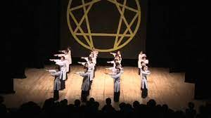

Negyedik út
Gurdjieff 1922-től Franciaországban, Prieurié-ben
működtette az Intézet az ember harmónikus fejlődéséhez
elnevezésű negyedik utas iskoláját.
Enneagram
Az enneagram ősi szimbólumának segítségével értelmezhetőek a belső tudati világ mozgásainak folyamatai.

Az enneagram szimbóluma egy körből,
egy háromszögből és egy hexádból áll.
Szakrális táncok
A szakrális táncok a test mozdulatainak szigorú kontrollálásán keresztül segítenek a tudati mozgások megfigyelésében.

A szakrális táncok koreográfiája gyakran
az enneagram szimbólumához kapcsolódott.